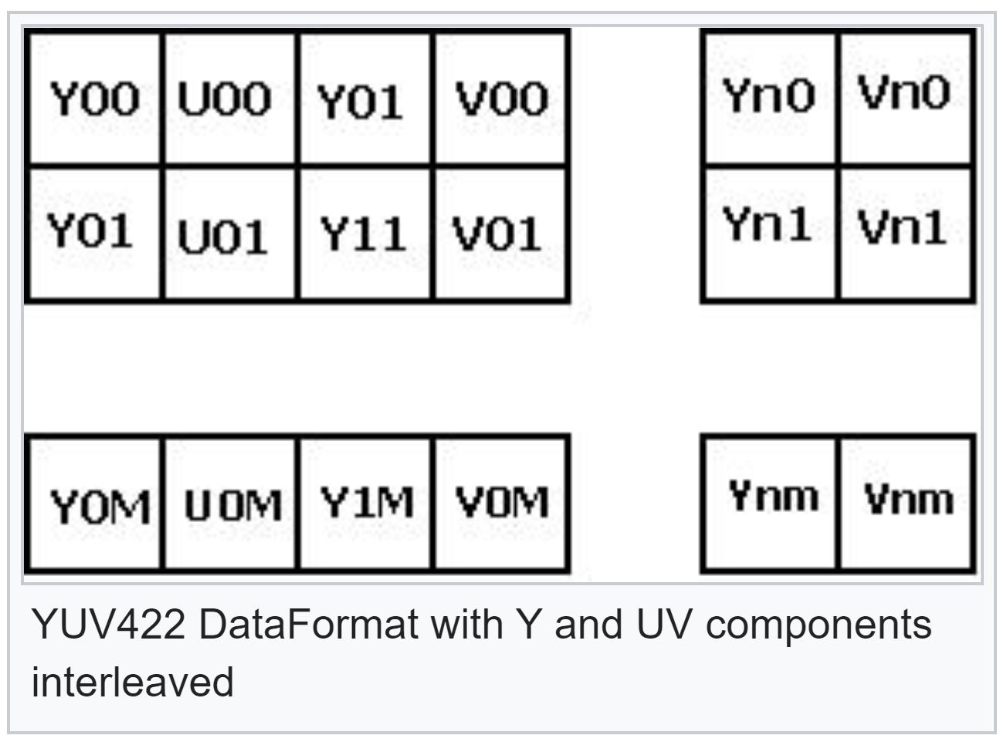

5.18. FVID2 User Guide¶
5.18.1. Introduction¶
FVID2 are the interface APIs for the video capture, video display and video processing (Memory to Memory drivers)applications on top of BIOS operating system. Provides the interfaces for the streaming operations like queuing of buffers to the hardware and getting is back from the hardware. Also provides the control interface for the devices like video encoders and video decoders which are actually not the data path devices. Gives same look and feel for the video applications across different SoCs.
Following are the features of the FVID2 APIs: - Platform independent and CPU independent APIs. - Suitable for multiprocessor communication environment like client-server model. - Supports blocking as well as non-blocking APIs. - Supports streaming class of devices like video capture and video display. - Supports non-steaming class of devices like video encoders and video decoders. - Supports sliced based operations like sliced based capture and slice based memory to memory drivers. - Support for the multiple buffers representing a single frame. - Support for configuring the hardware on per frame basis in synchronous with the frames submitted. AKA Runtime parameters change. - Interface supports multiple handle and multiple channel operation. Explained in detail in coming sections. - Support for adding the custom controls specific to the device.
Warning
Underlying drivers catering to FVID2 interfaces may decide to expose the sub-set of features supported by FVID2. Please refer to the individual driver userGuide for the features exposed by drivers.**
5.18.2. FVID2 enumerations¶
5.18.2.1. FVID2 Data Format¶
Fvid2_DataFormat represents the arrangement of the different components forming the pixel. These components can be in YUV color space or the RGB color space or any other color space. Below figure shows the commonly used data formats. FVID2 supports many more data formats. Specific driver may expose subset of the data formats from the mentioned below based on the hardware capability.
YUV420 Semiplanar Format
YUV422 Interleaved Format
RGB888 Packed Format

5.18.2.2. FVID2 Data Formats¶
typedef enum
{
FVID2_DF_YUV422I_UYVY = 0x0000,
/**< YUV 422 Interleaved format - UYVY. */
FVID2_DF_YUV422I_YUYV,
/**< YUV 422 Interleaved format - YUYV. */
FVID2_DF_YUV422I_YVYU,
/**< YUV 422 Interleaved format - YVYU. */
FVID2_DF_YUV422I_VYUY,
/**< YUV 422 Interleaved format - VYUY. */
FVID2_DF_YUV422SP_UV,
/**< YUV 422 Semi-Planar - Y separate, UV interleaved. */
FVID2_DF_YUV422SP_VU,
/**< YUV 422 Semi-Planar - Y separate, VU interleaved. */
FVID2_DF_YUV422P,
/**< YUV 422 Planar - Y, U and V separate. */
FVID2_DF_YUV420SP_UV,
/**< YUV 420 Semi-Planar - Y separate, UV interleaved. */
FVID2_DF_YUV420SP_VU,
/**< YUV 420 Semi-Planar - Y separate, VU interleaved. */
FVID2_DF_YUV420P,
/**< YUV 420 Planar - Y, U and V separate. */
FVID2_DF_YUV444P,
/**< YUV 444 Planar - Y, U and V separate. */
FVID2_DF_YUV444I,
/**< YUV 444 interleaved - YUVYUV... */
FVID2_DF_RGB16_565 = 0x1000,
/**< RGB565 16-bit - 5-bits R, 6-bits G, 5-bits B. */
FVID2_DF_ARGB16_1555,
/**< ARGB1555 16-bit - 5-bits R, 5-bits G, 5-bits B, 1-bit Alpha (MSB). */
FVID2_DF_RGBA16_5551,
/**< RGBA5551 16-bit - 5-bits R, 5-bits G, 5-bits B, 1-bit Alpha (LSB). */
FVID2_DF_ARGB16_4444,
/**< ARGB4444 16-bit - 4-bits R, 4-bits G, 4-bits B, 4-bit Alpha (MSB). */
FVID2_DF_RGBA16_4444,
/**< RGBA4444 16-bit - 4-bits R, 4-bits G, 4-bits B, 4-bit Alpha (LSB). */
FVID2_DF_ARGB24_6666,
/**< ARGB4444 24-bit - 6-bits R, 6-bits G, 6-bits B, 6-bit Alpha (MSB). */
FVID2_DF_RGBA24_6666,
/**< RGBA4444 24-bit - 6-bits R, 6-bits G, 6-bits B, 6-bit Alpha (LSB). */
FVID2_DF_RGB24_888,
/**< RGB24 24-bit - 8-bits R, 8-bits G, 8-bits B. */
FVID2_DF_ARGB32_8888,
/**< ARGB32 32-bit - 8-bits R, 8-bits G, 8-bits B, 8-bit Alpha (MSB). */
FVID2_DF_RGBA32_8888,
/**< RGBA32 32-bit - 8-bits R, 8-bits G, 8-bits B, 8-bit Alpha (LSB). */
FVID2_DF_BITMAP8 = 0x2000,
/**< BITMAP 8bpp. */
FVID2_DF_BITMAP4_LOWER,
/**< BITMAP 4bpp lower address in CLUT. */
FVID2_DF_BITMAP4_UPPER,
/**< BITMAP 4bpp upper address in CLUT. */
FVID2_DF_BITMAP2_OFFSET0,
/**< BITMAP 2bpp offset 0 in CLUT. */
FVID2_DF_BITMAP2_OFFSET1,
/**< BITMAP 2bpp offset 1 in CLUT. */
FVID2_DF_BITMAP2_OFFSET2,
/**< BITMAP 2bpp offset 2 in CLUT. */
FVID2_DF_BITMAP2_OFFSET3,
/**< BITMAP 2bpp offset 3 in CLUT. */
FVID2_DF_BITMAP1_OFFSET0,
/**< BITMAP 1bpp offset 0 in CLUT. */
FVID2_DF_BITMAP1_OFFSET1,
/**< BITMAP 1bpp offset 1 in CLUT. */
FVID2_DF_BITMAP1_OFFSET2,
/**< BITMAP 1bpp offset 2 in CLUT. */
FVID2_DF_BITMAP1_OFFSET3,
/**< BITMAP 1bpp offset 3 in CLUT. */
FVID2_DF_BITMAP1_OFFSET4,
/**< BITMAP 1bpp offset 4 in CLUT. */
FVID2_DF_BITMAP1_OFFSET5,
/**< BITMAP 1bpp offset 5 in CLUT. */
FVID2_DF_BITMAP1_OFFSET6,
/**< BITMAP 1bpp offset 6 in CLUT. */
FVID2_DF_BITMAP1_OFFSET7,
/**< BITMAP 1bpp offset 7 in CLUT. */
FVID2_DF_BAYER_RAW = 0x3000,
/**< Bayer pattern. */
FVID2_DF_RAW_VBI,
/**< Raw VBI data. */
FVID2_DF_RAW,
/**< Raw data - Format not interpreted. */
FVID2_DF_MISC,
/**< For future purpose. */
FVID2_DF_INVALID,
/**< Invalid data format. Could be used to initialize variables. */
FVID2_DF_MAX
/**< Should be the last value of this enumeration.
Will be used by driver for validating the input parameters. */
} Fvid2_DataFormat;
5.18.2.3. FVID2 ScanFormat¶
Represents the scanning format.
typedef enum
{
FVID2_SF_INTERLACED = 0,
/**< Interlaced mode. */
FVID2_SF_PROGRESSIVE,
/**< Progressive mode. */
FVID2_SF_MAX
/**< Should be the last value of this enumeration.
Will be used by driver for validating the input parameters. */
} Fvid2_ScanFormat;
5.18.2.4. FVID2 Field ID¶
Represents field ID of the buffer. For interlaced buffers field ID could be 0 or 1 depending upon the even and odd field buffer contains. For progressive displays field ID is same for all the frames.
typedef enum
{
FVID2_FID_TOP = 0,
/**< Top field. */
FVID2_FID_BOTTOM,
/**< Bottom field. */
FVID2_FID_FRAME,
/**< Frame mode - Contains both the fields or a progressive frame. */
FVID2_FID_MAX
/**< Should be the last value of this enumeration.
Will be used by driver for validating the input parameters. */
} Fvid2_Fid;
5.18.2.5. Bits per Pixel¶
Represents bits per pixel for buffer. For example for YUV422 interlaced format bit per pixel will be 16 and for YUV444 it will be 24 and YUV420 it will be 12.
typedef enum
{
FVID2_BPP_BITS1 = 0,
/**< 1 Bits per Pixel. */
FVID2_BPP_BITS2,
/**< 2 Bits per Pixel. */
FVID2_BPP_BITS4,
/**< 4 Bits per Pixel. */
FVID2_BPP_BITS8,
/**< 8 Bits per Pixel. */
FVID2_BPP_BITS12,
/**< 12 Bits per Pixel - used for YUV420 format. */
FVID2_BPP_BITS16,
/**< 16 Bits per Pixel. */
FVID2_BPP_BITS24,
/**< 24 Bits per Pixel. */
FVID2_BPP_BITS32,
/**< 32 Bits per Pixel. */
FVID2_BPP_MAX
/**< Should be the last value of this enumeration.
Will be used by driver for validating the input parameters. */
} Fvid2_BitsPerPixel;
5.18.3. FVID2 Structures¶
5.18.3.1. FVID2 Call-back Parameters(CbParams)¶
FVID2 supports the driver call back. Driver call the application on specific events like, completion of buffer capture, displayed or process. Or in case of error where application needs to take some action. Following is the structure defined by the FVID2 API for the application to pass the callback functions to be invoked by the driver.
typedef struct
{
Fvid2_CbFxn cbFxn;
/**< Application callback function used by the driver to intimate any
operation has completed or not. This is an optional parameter
in case application decides to use polling method and so could be
set to NULL. */
Fvid2_ErrCbFxn errCbFxn;
/**< Application error callback function used by the driver to intimate
any error occurs at the time of streaming. This is an optional
parameter in case application decides not to get any error callback
and so could be set to NULL. */
Ptr errList;
/**< Pointer to a valid framelist (Fvid2_FrameList) in case of capture
and display drivers or a pointer to a valid processlist
(Fvid2_ProcessList) in case of M2M drivers where the driver copies
the aborted/error packet. The memory of this list should be
allocated by the application and provided to the driver at the time
of driver creation. When the application gets this callback, it has
to empty this list and taken necessary action like freeing up memories
etc. The driver will then reuse the same list for future error
callback.
This could be NULL if errCbFxn is NULL. Otherwise this should be
non-NULL. */
Ptr appData;
/**< Application specific data which is returned in the callback function
as it is. This could be set to NULL if not used. */
Ptr reserved;
/**< For future use. Not used currently. Set this to NULL. */
} Fvid2_CbParams;
5.18.3.2. FVID2 Format¶
Defines the format capabilities of the buffer like dataformat, scanFormat, width, height etc.
typedef struct
{
UInt32 chNum;
/**< Channel Number to which this format belongs to.
This is used in case of multiple buffers queuing/deqeuing using a
single call. This is not applicable for all the drivers. When not
used set it to zero. */
UInt32 width;
/**< Width in pixels. */
UInt32 height;
/**< Number of lines per frame. For interlaced mode, this should be set to
the frame size and not the field size. */
UInt32 pitch[FVID2_MAX_PLANES];
/**< Pitch in bytes for each of the sub-buffers. This represents the
difference between two consecutive line address.
This is irrespective of whether the video is interlaced or
progressive and whether the fields are merged or separated for
interlaced video. */
UInt32 fieldMerged[FVID2_MAX_PLANES];
/**< Whether both the fields have to be merged - line interleaved or not.
Used only for interlaced format. The effective pitch is calculated
based on this information along with pitch parameter. If fields are
merged, effective pitch = pitch * 2 else effective pitch = pitch. */
UInt32 dataFormat;
/**< Frame data Format. For valid values see #Fvid2_DataFormat. */
UInt32 scanFormat;
/**< Scan Format. For valid values see #Fvid2_ScanFormat. */
UInt32 bpp;
/**< Number of bits per pixel. For valid values see #Fvid2_BitsPerPixel. */
Ptr reserved;
/**< For future use. Not used currently. Set this to NULL. */
} Fvid2_Format;
5.18.3.3. FVID2 Slice information¶
Represents the slice information. Used in sliced bases processing like slice based capture and sliced based memory to memory driver
typedef struct
{
UInt32 sliceNum;
/**< Current slice Number in this frame,
range is from 0 to (NoOfSlicesInFrame-1) */
UInt32 numSlcInLines;
/**< Number of lines available in the frame at the end of this slice. */
UInt32 numSlcOutLines;
/**< Number of lines generated in output buffer after processing
current slice */
} Fvid2_SliceInfo;
5.18.3.4. FVID2 Frame¶
Represents the attribute of one buffer in frame. Attributes like address of each planes and each fields. YUV420 semi-planar buffer with interlaced scan format will have two planes one each for Y data and UV data and odd and even fields. Below figure shows the manipulation of the addr field of the Fvid2_Frame structure for different data formats and scan formats.
YUV420 Semiplanar
Below figure shows the addr field of the Fvid2_Frame structure for the YUV420 semi planar data in which the image is interlaced and fields are separate in two different buffers.
YUV422 Interleaved
Below figure shows the addr field of the Fvid2_Frame structure for the YUV422 interleaved data in which the image is interlaced and fields are merged in single buffer. For the progressive image only the addr[0][0] needs to be initialized
Below figure shows the FVID2 frame structure in detail:
typedef struct
{
Ptr addr[FVID2_MAX_FIELDS][FVID2_MAX_PLANES];
/**< FVID2 buffer pointers for supporting multiple addresses like
y, u, v etc for a given frame. The interpretation of these pointers
depend on the format configured.
The first dimension represents the field and the second dimension
represents the plane. Not all pointers are valid for a given format.
Representation of YUV422 Planar Buffer:
Field 0 Y -> addr[0][0], Field 1 Y -> addr[1][0]
Field 0 U -> addr[0][1], Field 1 U -> addr[1][1]
Field 0 V -> addr[0][2], Field 1 V -> addr[1][2]
Representation of YUV422 Interleaved Buffer:
Field 0 YUV -> addr[0][0], Field 1 YUV -> addr[1][0]
Other pointers are not valid.
Representation of RGB888 Buffer (Assuming RGB is always progressive):
RGB -> addr[0][0]
Other pointers are not valid.
Instead of using numerical for accessing the buffers, the application
can use the macros defined for each buffer formats like
FVID2_YUV_INT_ADDR_IDX, FVID2_RGB_ADDR_IDX, FVID2_FID_TOP etc.
[IN] for queue operation.
[OUT] for dequeue operation. */
UInt32 fid;
/**< Indicates whether this frame belong to top or bottom field.
For valid values see #Fvid2_Fid.
[IN] for queue operation.
[OUT] for dequeue operation. */
UInt32 channelNum;
/**< Channel number to which this FVID2 frame belongs to.
This is used in case of multiple buffers queuing/deqeuing using a
single call.
If only one channel is supported, then this should be set to zero.
[IN] for queue operation.
[OUT] for dequeue operation. */
UInt32 timeStamp;
/**< Time Stamp for captured or displayed frame.
[OUT] for dequeue operation. Not valid for queue operation. */
Ptr appData;
/**< Additional application parameter per frame. This is not modified by
driver. */
Ptr perFrameCfg;
/**< Per frame configuration parameters like scaling ratio, positioning,
cropping etc...
This could be set to NULL if not used.
[IN] for queue operation. Dequeue returns the same pointer back to
the application. */
Ptr blankData;
/**< Blanking data.
This could be set to NULL if not used.
[IN] for queue operation.
[OUT] for dequeue operation. */
Ptr drvData;
/**< Used by driver. Application should not modify this. */
Fvid2_SliceInfo *sliceInfo;
/**< Used for Slice level processing information exchange between
application and driver.
This could be set to NULL if slice level processing is not used. */
Ptr reserved;
/**< For future use. Not used currently. Set this to NULL. */
} Fvid2_Frame;
5.18.3.5. FVID2 FrameList¶
Framelist represents N frames. For display N frames represent buffer address of each window in a multi-window mode. For capture it represents different channel buffers for the multiplexed channels. Currently Fvid2_Framelist can handle maximum of FVID2_MAX_FVID_FRAME_PTR frame pointers.
typedef struct
{
Fvid2_Frame *frames[FVID2_MAX_FVID_FRAME_PTR];
/**< An array of FVID2 frame pointers.
[IN] The content of the pointer array i.e Fvid2_Frame pointer is input
for queue operation
[OUT] Output for dequeue operation. */
UInt32 numFrames;
/**< Number of frames - Size of the array containing FVID2 pointers.
[IN] for queue operation.
[OUT] for dequeue operation. */
Ptr perListCfg;
/**< Per list configuration parameters like scaling ratio, positioning,
cropping etc for all the frames together.
This could be set to NULL if not used. In this case, the driver will
use the previous configuration.
[IN] for queue operation. Dequeue returns the same pointer back to
the application. */
Ptr drvData;
/**< Used by driver. Application should not modify this. */
Ptr reserved;
/**< For future use. Not used currently. Set this to NULL. */
} Fvid2_FrameList;
Below figure shows the framelist containing Fvid2_Frame in case of display and capture drivers.
5.18.3.6. FVID2 ProcessList¶
FVID2 process list containing frame list used to exchange multiple input/output buffers in M2M (memory to memory) operation. Each of the frame list in turn have multiple frames/request.
typedef struct
{
Fvid2_FrameList *inFrameList[FVID2_MAX_IN_OUT_PROCESS_LISTS];
/**< Pointer to an array of FVID2 frame list pointers for input nodes.
[IN] for both queue and dequeue operation.
The content of the pointer array i.e Fvid2_FrameList pointer is
input for queue operation and is output for dequeue operation. */
Fvid2_FrameList *outFrameList[FVID2_MAX_IN_OUT_PROCESS_LISTS];
/**< Pointer to an array of FVID2 frame list pointers for output nodes.
[IN] for both queue and dequeue operation.
The content of the pointer array i.e Fvid2_FrameList pointer is
input for queue operation and is output for dequeue operation. */
UInt32 numInLists;
/**< Number of input frame list valid in inFrameList.
[IN] for queue operation.
[OUT] for dequeue operation. */
UInt32 numOutLists;
/**< Number of output frame list valid in outFrameList.
[IN] for queue operation.
[OUT] for dequeue operation. */
Ptr drvData;
/**< Used by driver. Application should not modify this. */
Ptr reserved;
/**< For future use. Not used currently. Set this to NULL. */
} Fvid2_ProcessList;
Below figure shows the processlist containing Fvid2_FrameList which in turn will point to Fvid2_Frame
5.18.4. FVID2 APIs¶
5.18.4.1. FVID2 Init¶
This API should be called before calling any of the FVID2 APIs. This API initializes the underlying hardware/software sub-system built on top of FVID2 APIs. This should be called once during the system initialization time in the task context. This function should not be called from the ISR context.
Int32 Fvid2_init(Ptr args);
- args - NULL currently not used.
5.18.4.2. FVID2 DeInit¶
This function should be called during the system de-Initialization. De-Initializes the hardware/software sub-system built on top of FVID2 APIs. This should be called only once from the task context.
Int32 Fvid2_deInit(Ptr args);
- args - Not used
5.18.4.3. FVID2 Create¶
This API is used to open the FVID2 driver. drvId and InstanceId pair represents the hardware on which driver operates. It initializes the hardware supported by the driver and configures it according to the parameters provided by open. Some of the FVID2 driver supports multiple creates/open on the same drvId and instanceId. Requests from the different handles of the multiple opens is serialize by the driver and is operated upon the same hardware one by one.
Fvid2_Handle Fvid2_create(UInt32 drvId,
UInt32 instanceId,
Ptr createArgs,
Ptr createStatusArgs,
const Fvid2_CbParams *cbParams);
- drvId - [IN] Used to find a matching ID in the device driver table
- instanceId - [IN] Instance ID of the driver to open and is used to differentiate multiple instance support on a single driver.
- createArgs - [IN] Pointer to the create argument structure. The type of the structure is defined by the specific driver. This parameter could be NULL depending on whether the actual driver forces it or not.
- createStatusArgs - [OUT] Pointer to status argument structure where the driver returns any status information. The type of the structure is defined by the specific driver. This parameter could be NULL depending on whether the actual driver forces it or not.
- cbParams - Application callback parameters Fvid2_CbParams. This parameter could be NULL depending on whether the actual driver forces it or not.
- return - Returns a non-NULL Fvid2_Handle object on success else returns NULL on error.
5.18.4.4. FVID2 Set Format¶
Sets the format information for the already opened driver for a given channel. This function should be called from the task context.
Int32 Fvid2_setFormat(Fvid2_Handle handle, Fvid2_Format *fmt)
- handle - [IN] FVID2 handle returned by FVID2 Create call.
- fmt - [IN] Pointer to the FVID2 Create structure.
- return - FVID2_SOK on success, else appropriate FVID2 Error Code on failure
5.18.4.5. FVID2 Get Format¶
Returns the format already set for the opened driver for a given channel. This function should be called from the task context.
Int32 Fvid2_getFormat(Fvid2_Handle handle, Fvid2_Format *fmt)
- handle - [IN] FVID2 handle returned by FVID2 Create call.
- fmt - [OUT] Pointer to the FVID2 Create structure.
- return - FVID2_SOK on success, else appropriate FVID2 Error Code on failure.
5.18.4.6. FVID2 Control¶
Driver exposes the custom control commands specific to the driver and hardware through this interface. All the FVID2 control commands are blocking. These control commands should be called from the task context unless specified otherwise by the specific drivers. Example of the control commands exposed by different drivers are creation/selection of the different multi window layout in case of display driver, programming of coefficients in case of memory drivers involving scalars.
Int32 Fvid2_control(Fvid2_Handle handle,
UInt32 cmd,
Ptr cmdArgs,
Ptr cmdStatusArgs);
- handle - [IN] FVID2 handle returned by FVID2 Create call.
- cmd - [IN] IOCTL command. The type of command supported is defined by the specific driver.
- cmdArgs - [IN] Pointer to the command argument structure. The type of the structure is defined by the specific driver for each of the supported IOCTL. This parameter could be NULL depending on whether the actual driver forces it or not.
- cmdStatusArgs - [OUT]Pointer to status argument structure where the driver returns any status information. The type of the structure is defined by the specific driver for each of the supported IOCTL. This parameter could be NULL depending on whether the actual driver forces it or not.
- return - FVID2_SOK on success, else appropriate FVID2 Error Code on failure.
5.18.4.7. FVID2 Start¶
An application calls FVID2 start to request the video device driver to start the video display or capture operation. Most of the control commands and start FVID2 commands like Fvid2_setFormat,Fvid2_getFormat cannot be called unless specified otherwise by driver. This function should be called from the task context.
Int32 Fvid2_start(Fvid2_Handle handle, Ptr cmdArgs)
- handle - [IN] FVID2 handle returned by FVID2 Create call.
- cmdArgs - [IN] Pointer to the start argument structure. The type of the structure is defined by the specific driver. This parameter could be NULL depending on whether the actual driver forces it or not.
- return - FVID2_SOK on success, else appropriate FVID2 Error Code on failure.
5.18.4.8. FVID2 Stop¶
An application calls the FVID2 stop to request the video device driver to stop the video display or capture operation. FVID2 Stop may be called by application to change the setting of the driver like format, encoder/decoder mode etc. After doing the required operation driver can be start again. .. warning:: If driver settings are called after Fvid2_Stop, then remaining buffers in the queue should be de-queued before starting the driver again.
Int32 Fvid2_stop(Fvid2_Handle handle, Ptr cmdArgs)
- handle - [IN] FVID2 handle returned by FVID2 Create call.
- cmdArgs - [IN] Pointer to the start argument structure. The type of the structure is defined by the specific driver. This parameter could be NULL depending on whether the actual driver forces it or not.
- return - FVID2_SOK on success, else appropriate FVID2 Error Code on failure.
5.18.4.9. FVID2 Queue¶
This is used to submit a video buffer to the video device driver. This is used in capture/display drivers. This function should be called from task context unless driver specifies that it can be called from the interrupt context as well. This is a non blocking API unless the specific driver specifies otherwise.
Int32 Fvid2_queue(Fvid2_Handle handle,
Fvid2_FrameList *frameList,
UInt32 streamId);
- handle - [IN] FVID2 handle returned by FVID2 Create call.
- frameList - [IN] Pointer to the FVID2 FrameList structure containing the information about the FVID2 frames that has to be queued in the driver.
- streamId - [IN]Stream ID to which the frames should be queued. This is used in drivers where they could support multiple streams for the same handle. Otherwise this should be set to zero.
- return - FVID2_SOK on success, else appropriate FVID2 Error Code on failure.
5.18.4.10. FVID2 De-Queue¶
An application calls Fvid2_dequeue to request the video device driver to give ownership of a video buffer. This is used in the capture and display driver. This is a non-blocking API if timeout is FVID2_TIMEOUT_NONE and could be called by task context as well as interrupt context unless specific driver mentions otherwise. This is blocking API if timeout is FVID2_TIMEOUT_FOREVER if supported by specific driver implementation.
Int32 Fvid2_dequeue(Fvid2_Handle handle,
Fvid2_FrameList *frameList,
UInt32 streamId,
UInt32 timeout);
- handle - [IN] FVID2 handle returned by FVID2 Create call.
- frameList - [OUT] Pointer to the FVID2 FrameList structure where the de-queued frame pointers will be stored
- streamId - [IN]Stream ID to which the frames should be queued. This is used in drivers where they could support multiple streams for the same handle. Otherwise this should be set to zero.
- timeout - [IN] FVID2 timeout in units of OS ticks. T his will determine the timeout value till the driver will block for a free or completed buffer is available. For non-blocking drivers this parameter might be ignored. return - FVID2_SOK on success, else appropriate FVID2 Error Code on failure.
5.18.4.11. FVID2 Queue and De-Queue¶
Single Queue and Single De-Queue Single queue and corresponding single de-queue of the framelist is used in the display driver. Where the single framelist can contain the single buffer for the whole frame or can contain multiple buffers in case of multiple window configuration. Below figure shows how FVID2 FrameList and FVID2 Frames are initialized in case of multiple window configuration
As shown in above figure - One Fvid2_Frame is pointing to one buffer each. - All the FVID2 frames to be display as a part of single video frame is pointed by the FVID2 Frame pointers inside FVID2 FrameList.
Below sequence shows how the FVID2 Frame pointers inside the Fvid2_Frame list are exchanged between the driver and the application in the FVID2 Queue and FVID2 De-Queue calls. - FVID2 FrameList contains 4 FVID2 Frames. - Its submitted through single FVID2 Queue and will be displayed as single video frame. - Driver copies all the content inside the FVID2 FrameList into the driver’s FVID2 FrameList and application can’t touch it till driver returns it back. Now the application FVID2 FrameList is free to load new FVID2 Frames. - Driver gives the callback to the application on successfully displaying the video frames inside FVID2 FrameList - Application calls the FVID2 De-Queue with the empty FVID2 FrameList. Driver copied back all the FVID2 Frames back. - In display case application always queues all the frames required to display one video frame and driver gives it back once it completes displaying that video frame. - Hence always single FVID2 Queue call results in single FVID2 De-Queue call.
Single Queue and Single De-Queue This is used in case of multiple channel case. While priming of the buffers before the capture starts application submits buffers for all the channels using a single FVID2 Queue call. Since the capture is multiplexed input frames from the different sources could complete at different time for each input and application wants to process buffer as soon as its captured. This concept allows buffers to be de-queued as they are complete without waiting for other channels to be completed. This results in single queue where buffers for all the channels are queued in single called and de-queued as the channels are completed capturing.
Below sequence shows the single queue and multiple de-queue used in capture driver: - FVID2 FrameList contains 4 FVID2 Frames one for each channel in case of 4 channels multiplexed capture. - Capture driver gives callback to the application with two frames completed capturing. - Application calls FVID2 De-Queue with empty FVID2 FrameList. - Capture driver returns pointers to both completed FVID2 Frames - Again capture driver gives callback to application with the rest of the two frames captured. - Application calls FVID2 De-Queue with empty FVID2 FrameList. - Again capture driver returns pointers to both completed FVID2 Frames
So this results in the singe call to FVID2 Queue to submit frames related to all channels, and driver giving multiple callbacks to the application for the number of frames captured which results in the multiple de-queue calls for a single queue call.
Application can also opt to wait for the multiple callback and call FVID2 Queue which will return all the frames capture till then.
5.18.4.12. FVID2 ProcessFrames¶
An application calls this function to submit a video buffer to the video device driver. This API is very similar to FVID2 Queue API except that this work in M2M drivers. This function can be called from the task context unless driver specifies that it can be called from the interrupt context as well. This is a non blocking API unless driver specifies otherwise.
Int32 Fvid2_processFrames(Fvid2_Handle handle,
Fvid2_ProcessList *processList);
- handle - [IN] FVID2 handle returned by FVID2 Create call.
- processList - [OUT] Pointer to the FVID2 ProcessList structure containing the information about the FVID2 frame lists and frames that has to be queued to the driver for processing. return - FVID2_SOK on success, else appropriate FVID2 Error Code on failure.
5.18.4.13. FVID2 GetProcessedFrames¶
An application calls this function to request the video device driver to give ownership of a video buffer.This API is very similar to the Fvid2_dequeue API except that this is used in M2M drivers only. This is a non-blocking API if timeout is FVID2_TIMEOUT_NONE and could be called by task and ISR context unless the driver specifies otherwise. his is blocking API if timeout is FVID2_TIMEOUT_FOREVER if supported by specific driver implementation.
Int32 Fvid2_getProcessedFrames(Fvid2_Handle handle,
Fvid2_ProcessList *processList,
UInt32 timeout);
- handle - [IN] FVID2 handle returned by FVID2 Create call.
- processList - [OUT] Pointer to the FVID2 ProcessList structure where the driver will copy the references to the dequeued FVID2 frame lists and frames.
- timeout - [IN] FVID2 timeout. This will determine the timeout value till the driver will block for a free or completed buffer is available. For non-blocking drivers this parameter might be ignored.
Below figure shows how FVID2 FrameList pointers and FVID2 Frame pointers are initialized inside FVID2 ProcessList:
As shown in above figure: - Input Framelist pointer is initialized with one Framelist and output Framelist pointers are initialized with two FrameLists. - So numInLists is set to 1 and numOutLists is set to 2 - In inputFramelist 3 Frame pointers are initialized with Frames. - In outputFrameLists Frame pointers of both the framelists are intialized with three Frames each.
Below figure shows how FVID2 ProcessList are exchanged between the driver and application in the FVID2 ProcessFrames and FVID2 GetProcessedFrames APIs.
As show in figure Fvid2_processFrames and Fvid2_GetProcessedFrames is same like FVID2 Queue and FVID2 De-Queue in a single Queue and single De-Queue case except here the FVID2 ProcessList acts as containers instead of FVID2 FrameList
5.18.4.14. FVID2 GetProcessedFrames¶
Function to get the information about various FVID2 standards. Returns FVID2_SOK on success, else appropriate FVID2 error code on failure.
Int32 Fvid2_getStandardInfo(Fvid2_StandardInfo *stdInfo);
- stdInfo - [OUT] Pointer to #Fvid2_StandardInfo structure where the information is filled
5.18.5. FVID2 Error Codes¶
Following is the list of error codes that FVID2 APIs returns on successful or on the failure of the API. Each of the error codes is explained in the below code snapshot.
#define FVID2_SOK ((Int32) 0)
/* FVID2 API call successful. */
#define FVID2_EFAIL ((Int32) -1)
/* FVID2 API call returned with error as failed. It may be some
* hardware failure or software failure */
#define FVID2_EBADARGS ((Int32) -2)
/* FVID2 API call returned with error as bad arguments. Typically
* NULL pointer passed to the FVID2 API where its not expected. */
#define FVID2_EINVALID_PARAMS ((Int32) -3)
/* FVID2 API call returned with error as invalid parameters. Typically
* when parameters are not valid. */
#define FVID2_EDEVICE_INUSE ((Int32) -4)
/* FVID2 API call returned with error as device already in use. Tried
* to open the driver maximum + 1 times. Display and Capture driver suppports
* single open, while M2M driver supports multiple open. */
#define FVID2_ETIMEOUT ((Int32) -5)
/* FVID2 API call returned with error as timed out. Typically API is
* waiting for some condition and returned as condition not happened
* in the timeout period. */
#define FVID2_EALLOC ((Int32) -6)
/* FVID2 API call returned with error as allocation failure. Typically
* memory or resource allocation failure. */
#define FVID2_EOUT_OF_RANGE ((Int32) -7)
/* FVID2 API call returned with error as out of range. Typically when
* API is called with some argument that is out of range for that API like
* array index etc. */
#define FVID2_EAGAIN ((Int32) -8)
/* FVID2 API call returned with error as try again. Momentarily API is
* not able to service request because of queue full or any other temporary
* reason. */
#define FVID2_EUNSUPPORTED_CMD ((Int32) -9)
/* FVID2 API call returned with unsupported command. Typically when
* command is not supported by control API. */
#define FVID2_ENO_MORE_BUFFERS ((Int32) -10)
/* FVID2 API call returned with error as no more buffers available.
* Typically when no buffers are available. */
#define FVID2_EUNSUPPORTED_OPS ((Int32) -11)
/* FVID2 API call returned with error as unsupported operation.
* Typically when the specific operation is not supported by that API such
* as IOCTL not supporting some specific functions. */
#define FVID2_EDRIVER_INUSE ((Int32) -12)
/* FVID2 API call returned with error as driver already in use. */